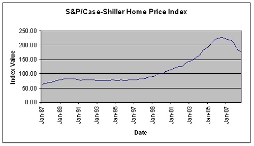
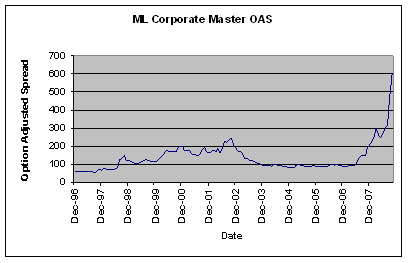

The events of the 2008 credit crisis and their consequences will shape the investment landscape for decades to come. Therefore, investors who wish to be successful need to have a comprehensive understanding of the credit crisis and the changes it has produced in the financial community. This tutorial will provide readers with a broad-based overview of the credit crisis. It's an excellent starting place for developing an opinion about the future of the global financial environment.
The tutorial begins with a brief history of Wall Street, an analysis of the differences between investment and commercial banking, and an overview of the disappearance of the classic investment bank. In the second chapter, we'll discuss the crisis in more detail, provide a look at some famous historical crises and compare their causes with the 2008 credit crisis. The third and fourth chapters will look more closely at the credit crisis; first by examining its origins and then by analyzing the events that prompted its onset. The tutorial will then provide an overview of the most important events that occurred during the credit crisis before examining governmental efforts to mitigate the crisis and prevent the systemic collapse of the financial system.
We'll also examine the crisis's impact on financial markets and investors, and provide an overview of its impact on the financial markets. You'll also find some timeless investment lessons that the credit crisis has reinforced and that can help you succeed through future market downturns.
While this tutorial is as comprehensive as possible, readers should remember that the credit crisis consisted of an amazing array of previously unimaginable events. In addition, future accounts of the credit crisis may differ somewhat from this tutorial, based upon the perspective that will come from examining events with additional hindsight.
(For background reading, see the Financial Crisis Survival Guide.)
A historical understanding of Wall Street will provide a starting place for analyzing the credit crisis that changed the financial landscape forever. Therefore, this first chapter will discuss the evolution of investment banking to provide a context to the remainder of this tutorial.
Under the Buttonwood Tree
Wall Street originated beneath a buttonwood tree, where a group of traders gathered during the late eighteenth century. Eventually, the New York Stock Exchange (NYSE) came to be headquartered on the corner of Wall and Broad Streets in lower
What began in the shade of a buttonwood tree has today evolved into a massive global industry. At the industry's peak before the credit crisis, financial firms made up 22% of the total market capitalization of the Standard & Poor's 500 Index (S&P 500). Even above and beyond its economic impact, the term "Wall Street" has come to symbolize a culture and a way of life that are instantly recognizable around the world.
Investment Banks and Commercial Banks
Commercial banking and investment banking have historically been separated. Commercial banks accepted customer deposits and made loans to businesses and consumers. This was considered a safe and stable business with relatively low profit margins. Investment banks helped raise money for companies and governments through stock or bond sales, advised companies on mergers and acquisitions, and traded securities for customers or their own accounts. These activities were considered riskier than commercial banking, but profit margins were higher.
This separation between commercial and investment banking began during the Great Depression. Previously, individual firms were allowed to conduct both investment banking and commercial banking operations. However, as part of a plan to reform the financial system, the Glass-Steagall Act separated investment banking firms from commercial banking firms. While commercial banking firms grew to be much larger companies, investment banks became the companies most closely identified with Wall Street. Firms such as Goldman Sachs, Lehman Brothers, Merrill Lynch, Salomon Brothers and Morgan Stanley eventually became the most prestigious investment banks on Wall Street. (To learn more, read What Was The Glass-Steagall Act?)
In the 1980s and 1990s, many firms began to merge as the globalization of financial markets and increasing capital requirements prompted the creation of increasingly larger companies. This trend culminated in 1999 with passage of the Gramm-Leach-Bliley Act, which essentially reversed the Glass-Steagall Act. By allowing commercial and investment banking operations to once again occur within the same firm, the Gramm-Leach-Bliley Act facilitated the creation of the so-called "universal bank". Universal banks such as Citigroup (NYSE:C), JPMorgan (NYSE:JPM), Barclays (NYSE:BCS) and UBS (NYSE:UBS) combined commercial and investment banking and use their massive balance sheets to underprice the traditional investment banks. By the onset of the credit crisis, the investment banking "bulge bracket" included not only traditional investment banks such as Goldman Sachs (NYSE:GS) and Morgan Stanley (NYSE:MS), but also universal banks like Citigroup, UBS and JPMorgan.
The Ascent of Risk
In the not-too-distant past, the bulk of investment banks' business consisted of advising corporations on mergers and acquisitions, raising capital for companies and governments, and facilitating stock or bond trades for their customers. Over time, though, the profitability of these activities began to decline as the investment banks faced increasing competition from emerging universal banks.
Seeking higher profits, investment banks such as Goldman Sachs increasingly turned to riskier activities such as principal trading and investing to generate the bulk of their profits. Principal trading and investing occurs when a firm uses its own capital to invest in the markets in hopes of generating profits. During good times, these activities can be phenomenally profitable, and many firms posted record profits in the years leading up to the credit crisis. However, principal trading and investing also exposed Wall Street firms to much higher risk. (To learn more about risk, see Financial Concepts: The Risk/Return Tradeoff.)
While investment banks were increasing the amount of risk that they took in their principal trading, they were also becoming increasingly dependent on complicated derivatives and securitized products. The complicated nature of these products allowed firms with an expertise in them to generate large profits. However, derivatives and securitized products are also difficult to value; these difficulties would eventually result in many firms having much higher levels of risk exposure than they had intended. (For more on this, see Valuation Analysis.)
Disappearance of Investment Banks
At the start of 2008, Goldman Sachs, Morgan Stanley, Merrill Lynch (NYSE:MER), Lehman Brothers (OTC:LEHMQ) and Bear Stearns were the five largest stand-alone investment banks. The companies had existed for a combined total of 549 years, but within the span of six months, they would all be gone.
In March 2008, Bear Stearns teetered on the edge of bankruptcy. J.P. Morgan purchased the bank for $10 a share, a fraction of its all-time high of $172 a share. The purchase was facilitated by the Federal Reserve, which guaranteed a large portion of Bear's liabilities as part of an effort to mitigate the potential impact of a Bear Stearns bankruptcy. Following a tumultuous summer, Lehman Brothers succumbed to the credit crisis on September 15, 2008, when it filed for the largest bankruptcy in
At the same time that Lehman Brothers filed for bankruptcy, Merrill Lynch was struggling for survival. Unsure of its ability to continue as a stand-alone entity, Merrill chose to sell itself to Bank of America (NYSE:BAC), ending 90 years of independence.
Following the disappearance of Bear Stearns, Lehman Brothers and Merrill Lynch, the only two remaining independent investment banks were Goldman Sachs and Morgan Stanley. These firms were the two largest and most prestigious of the investment banks. As the credit crisis intensified, it became apparent that both of these firms were also in a struggle for survival. With confidence in the investment banking business model evaporating, Goldman Sachs and Morgan Stanley chose to convert to bank holding companies, thus ending their existence as stand-alone investment banks.
| Firm | Date Founded | Fate |
| Goldman Sachs | 1869 | Converted to bank holding company September 21, 2008 |
| Morgan Stanley | 1935 | Converted to bank holding company September 21, 2008 |
| Merrill Lynch | 1914 | Acquired by Bank of |
| Lehman Brothers | 1850 | Filed for bankruptcy September 15, 2008 |
| Bear Stearns | 1923 | Acquired by JPMorgan March 16, 2008 |
| Figure 1: The disappearance of investment banks |
While several much smaller investment banks still exist, the dramatic reshaping of the financial landscape means that the bulge bracket of investment banking now consists entirely of universal banks. Seventy-five years after the Glass-Steagall Act originally separated commercial and investment banking, events have come full circle and these activities are once again performed by the same firms.
Conclusion
From its origins under a buttonwood tree, Wall Street developed into a global industry that generated huge profits. For decades, investment banks dominated Wall Street and relatively low-risk investment banking activities were extremely profitable. However, margins in these traditional businesses steadily declined - a trend that was exacerbated after the turn of the millennium, when investment banks increasingly were forced to compete with much larger universal banks. As these firms competed with one another, they increasingly turned to higher-risk activities to generate record profits. In doing so, they also assumed ever-higher risk levels in the years leading up to the start of the credit crisis. (To learn about how to predict bank failures, read Texas Ratio Rounds Up Bank Failures.)
This chapter will provide an overview of historical financial crises and then explore the similarities between those crises and the 2008 credit crisis. An understanding of the common causes of financial crises will assist investors in navigating any future crises they may encounter.
What Is a Financial Crisis?
A financial crisis is often preceded by a bubble. A bubble occurs when many investors are attracted to a market sector, usually due to attractive fundamentals. Speculators then rush to this newest hot market, searching for quick profits and driving prices even higher. At some point, the amount of money flowing to the market increases to the point that valuations are no longer supported by attractive fundamentals, signaling the end of a bull market and the beginning of a bubble. Although many market participants may realize that valuations are stretched, greed drives them to bid prices ever higher. (For more on types of markets, see Digging Deeper Into Bull And Bear Markets.)
When enough market participants eventually realize that valuations are not supported by the fundamentals, the market begins to decline. As prices fall, more and more investors rush to sell. This wave of selling quickly escalates, driving prices even lower. As this downward spiral continues, fear replaces greed, and market participants stop making rational decisions and instead rush to sell their holdings at whatever price they can get. Profits made over the course of many years can turn into losses in a frighteningly short time. A sufficiently bad downward spiral is commonly referred to as a crisis. (To learn more, read Panic Selling - Capitulation Or Crash?)
Famous Financial Crises
One of the most famous examples of an early market crisis is the Dutch tulip craze of the 1630s. Tulips were widely sought after for their beauty and the scarcity of certain unique color patterns. As more and more speculators began crowding into the market, prices soared. Eventually, some rare tulip bulbs were worth as much as a fine estate. As some market participants began to take profits, prices fell. Anxious to lock in profits, more and more tulip owners rushed to sell, leading to a downward spiral in prices. Tulip prices soon returned to the tulips' intrinsic value, but the bubble and ensuing crash had resulted in catastrophic losses for many people and caused an economic depression.
The most well-known market crash in the
Following industry deregulation in the 1980s, savings and loans (S&Ls) began paying higher interest rates on short-term deposits and investing in riskier assets. This combination eventually led to very large losses across the industry. As this important corner of the financial system approached insolvency, the federal government formed the Resolution Trust Corporation (RTC) to rescue the industry in 1989. While the government's actions prevented a financial collapse, more than 500 S&Ls ultimately failed, and the country suffered a relatively severe recession from 1990-91. The RTC has been cited as a template for the Troubled Asset Relief Program (TARP) that the government created in 2008 to assist financial firms during the credit crisis. (To learn more, read Liquidity And Toxicity: Will TARP Fix The Financial System?)
The U.S. suffered its worst ever one-day stock market decline on Black Monday, October 19, 1987. The cause of the 22.6% decline is still debated, but excessive valuations and overconfidence among market participants played a role. Although the one-day decline was extremely severe, aggressive actions by the Federal Reserve helped assure the solvency of the financial system. The
Prior to the current credit crisis, the Asian Contagion of 1997-98 was generally considered the worst financial crisis since the Great Depression. When
In the U.S., the 1990s witnessed a remarkable bull market in stocks. Fueled by the internet explosion, investors rushed to purchase the shares of nearly any company involved in technology. While the internet represented a once-in-a-generation technological breakthrough, valuations in technology stocks came to far exceed those justified by the fundamentals. Market participants eventually realized that future profits might never justify the current lofty valuations, and prices began to fall. The Nasdaq composite ultimately lost more than 75% of its value, and the economy sank into a recession. (For further reading on past crashes, check out The Greatest Market Crashes.)
Commonalities Between the 2008 Credit Crisis and Previous Crises
In addition to the emotions of greed and fear, a review of the historical record shows that several factors have been present at the onset of many financial crises. These factors include an asset/liability mismatch and excessive leverage and risk. Frequently more than one factor is present, and each factor can multiply the damage caused by one of the others.
Asset/Liability Mismatch - When a financial institution has a wide differential between the duration of its assets (loans or investments) and its liabilities (depositors or creditors), it is experiencing an asset/liability mismatch. Asset/liability mismatches are the main reason why the business model of the standalone investment bank came into question during the 2008 credit crisis. Investment banks are extremely dependent on short-term financing to conduct their operations. However, the assets (investments) of the firms are longer term in nature, particularly during periods of market illiquidity when selling is difficult. Asset/liability mismatches are part of the reason why Bear Stearns and Lehman Brothers collapsed and Goldman Sachs and Morgan Stanley chose to become bank holding companies.
While commercial banks also have asset/liability mismatches, their customer deposits are seen as a relatively stable source of funding and have become the preferred method of financial company financing.
Excessive Leverage - Under normal circumstances, asset/liability mismatches are manageable. However, the mismatch becomes a problem when financial institutions employ excessive leverage. While commercial banks have traditionally employed leverage of 10-12 times their capital, investment banks such as Bear Stearns and Lehman Brothers saw their leverage ratios increase dramatically in the years leading up to the onset of the credit crisis. Leverage ratios in excess of 30-times capital were not unusual for investment banks. As so often happens, this leverage proved fatal when markets began to experience much higher volatility levels.
Excessive Risk - Financial crises often occur when excessive risk-taking is present in the financial sector. This may occur intentionally, such as when S&Ls invested in risky real estate deals in the 1980s, or unintentionally, such as when investment banks purchased 'AAA'-rated mortgage-backed securities prior to the 2008 credit crisis. Excessive risk, whether intentional or due to miscalculations in valuation models, has been a part of nearly every financial crisis in history and is likely to be an important factor during future crises as well. (For further reading, see Risk Tolerance Only Tells Half The Story.)
Conclusion
Several factors explain why the current credit crisis has been so severe. First of all, a wide variety of asset classes enjoyed an unusually long period of prosperity leading up to the crisis. This resulted in a sense of complacency among many market participants. Second, this crisis has involved many financial instruments that are relatively new and/or difficult to value. Previously esoteric securities such as collateralized debt obligations (CDO), structured investment vehicles (SIV) and credit default swaps (CDS) were at the center of the 2008 crisis. Confusion over the true value of these securities led to uncertainty among market participants about the size of financial companies' losses. Finally, the globalization of financial markets caused the credit crisis to spill beyond its origins in the
At the dawn of the new millennium, global financial markets entered a period that came to be defined by low interest rates and below-average volatility. This period, sometimes referred to as "the great moderation", was characterized by a global savings glut that saw emerging-market and oil-producing countries supply the developed world with enormous amounts of capital. This capital helped keep interest rates at historically low levels in much of the developed world and prompted investors to seek out new investment opportunities in a search of higher yields than those available in traditional asset classes. This search for yield eventually led to an increased willingness among some market participants to accept greater levels of risk for lower levels of compensation.
This increased willingness to accept risk combined with excessive leverage, a housing bull market and widespread securitization would sow the seeds of the 2008 financial crisis. The remainder of this chapter will take a closer look at this greater willingness to accept risk, as well as the increased use of leverage, home price appreciation and securitization.
Risk
As the global savings glut contributed to extremely low interest rates in many traditional asset classes, investors sought higher returns wherever they could find them. Asset classes such as emerging market stocks, private equity, real estate and hedge funds became increasingly popular. In many instances, investors also found above-average returns in staggeringly complex fixed-income securities. (For more on this, see Structured Products Too Complex For The Average Joe.)
This global search for yield was prompted not only by historically low interest rates, but also by very low levels of volatility in many financial markets. These low levels of volatility made many risky asset classes appear safer than they actually were. Computerized models used to price complicated fixed-income securities assumed a continuing low-volatility environment and moderate price movements. This mispricing of risk contributed to inflated asset values and much greater market exposures than originally intended.
Leverage
The use of leverage can enhance returns and does not appear to carry much additional risk during periods of low volatility. The "great moderation" featured two forms of leverage. Investors used derivatives, structured products and short-term borrowing to control far larger positions than their asset bases would have otherwise allowed. At the same time, consumers made increasing use of leverage in the form of easy credit to make possible a lifestyle that would have otherwise exceeded their means.
The early parts of the decade provided a near-perfect environment for this increasing use of leverage. Low interest rates and minimal volatility allowed investors to employ leverage to magnify otherwise subpar returns without exposure to excessive risk levels (or so it seemed). Consumers also found the environment conducive for increasing their use of leverage. Low interest rates and lax lending standards facilitated the expansion of a consumer credit bubble. In the U.S., the savings ratio (a good approximation of how much use consumers are making of leverage) dropped from nearly 8% in the 1990s to less than 1% in the years leading up to the credit crisis. (For related reading, see Credit Cards: The Birth Of A Plastic Empire.)
As long as interest rates and volatility remained low and credit was easily available, there seemed to be no end in sight to the era of leverage. But the increased use of leverage and increasing indebtedness were placing consumers in a dangerous situation. At the same time, higher leverage ratios and an increasing willingness to accept risk were creating a scenario in which investors had priced financial markets for a near-perfect future. (For more on leveraging, see Put An End To Everyday Debt.)
Housing
To understand what happened in the housing market, we need to step back in time to the aftermath of the tech bubble and stock market meltdown of 2000-02. The precipitous decline in the stock market, combined with the accompanying recession and the terrorist attacks of September 11, 2001, caused the Federal Reserve (the Fed) to lower the federal funds rate to an unprecedented 1%. The economy and stock market did recover, but the slow pace of economic expansion prompted the Fed to maintain unusually low interest rates for an extended period of time. This sustained period of low interest rates accomplished the Fed's objectives, but they also contributed to a huge boom in the housing market.
As housing prices soared in many areas of the country, mortgage providers offered a variety of creative products designed to help buyers to afford more expensive homes. At the same time, lenders relaxed underwriting standards, allowing more marginal buyers to receive mortgages. The combination of low interest rates and easy access to credit prompted a dramatic increase in the value of homes. Consumers have historically believed that home prices do not decline, and that buying a home is one of the best investments they can make. The soaring housing market reinforced these beliefs and prompted a rush among consumers to buy a house as quickly as possible before prices rose even further. Many people also began speculating in the housing market by purchasing homes in the hope of "flipping" them quickly for a profit.
As home prices continued to soar, the market began to take on all of the characteristics of a classic bubble. (For more on this, read Why Housing Market Bubbles Pop.)
Securitization
Securitization describes the process of pooling financial assets and turning them into tradable securities. The first products to be securitized were home mortgages, and these were followed by commercial mortgages, credit card receivables, auto loans, student loans and many other financial assets.
Securitization provides several benefits to market participants and the economy including:
In the years leading up to the credit crisis, investors searching for yield often focused on securitized products that seemed to offer an attractive combination of high yields and low risk. As long as home prices stayed relatively stable and home owners continued to pay their mortgages, there seemed to be little reason not to purchase 'AAA'-rated securitized products. (For further reading, see Investing In Securitized Products.)
Conclusion
The "great moderation" of the early part of the 2000-2010 decade led investors to assume greater levels of risk and employ higher levels of leverage. The low interest rates of this period also contributed to a housing bubble and an increased willingness by consumers to take on more debt. At the same time, the widespread use of securitization meant that the risk from home mortgages and many other loans was spread throughout the economy. The combination of an increased willingness to assume risk, excessive leverage, a housing bubble and widespread securitization created the perfect environment for the credit crisis to occur.
In this chapter, we'll examine the causes of the credit crisis, starting with the decline in the housing market that eventually led to increased levels of mortgage defaults. These defaults prompted drops in the value of mortgage-backed securities and, as losses in the mortgage market grew, investors gradually began avoiding all risk. As a result, global asset prices fell, liquidity dried up, and panic set in in the marketplace. (For background reading, see The Fuel That Fed The Subprime Meltdown.)
The Housing Bubble
It's a widely held belief that home prices do not decline and it is this belief that led generations of consumers to regard a home purchase as the foundation of their financial programs. More recently, speculators have used this logic as part of their rationale for purchasing homes with the intention of "flipping" them. As the rate of appreciation in home values dramatically increased during the early years of the 21st century, many people began to believe that not only would home values not decline, but that they would also continue to rise indefinitely. (For more on flipping see, Flipping Houses: Is It Better Than Buy And Hold?)
The belief that home prices would not decline was also fundamental to the structuring and sale of mortgage-backed securities. Therefore, the models that investment firms used to structure mortgage-backed securities did not adequately account for the possibility that home prices could slide. Likewise, the ratings agencies assigned their highest rating, 'AAA', to many mortgage-backed securities based partly on the assumption that home prices would not fall. Investors then purchased these securities believing they were safe and that principal and interest would be repaid in a timely fashion. (To learn more, read The Risks Of Mortgage-Backed Securities and The Debt Ratings Debate.)
Home Prices Decline
Unfortunately, in 2008, the belief that home prices do not decline turned out to be incorrect; home prices began to slide in 2006 and by 2008, they had declined at rates not seen since the Great Depression.
According to Standard & Poor's, as of 2008, home prices were down 20% from their 2006 peaks, and in some hard-hit areas, that number was even higher.
As prices began to decline, homeowners who had planned to sell for a profit found themselves unable to do so. Other homeowners found that the outstanding balance on their mortgages was greater than the market value of their homes. This condition, known as an "upside down" mortgage, reduced the incentive for homeowners to continue to make their mortgage payments.
One particular corner of the housing sector that experienced a dramatic bubble and subsequent collapse was the subprime mortgage market. Subprime mortgages are issued to households with below-average credit or income histories and are generally considered more risky than traditional "prime" mortgages. Although they constitute a minority of the overall market, subprime mortgages became increasingly important over the years. Many people who took out subprime mortgages during the real estate boom did so with the hope of "flipping" the house for a large gain; in fact, this tactic worked well when home prices were soaring. Other subprime borrowers were lured into their mortgages by the initially low payments, but when these "teaser" rates reset to current market rates, many homeowners could not afford the new, much higher payments. (To learn more about subprime mortgages read our special feature, Subprime Mortgages.)
The chart below displays home price values as measured by the S&P/Case-Shiller Home Price Index. As the chart demonstrates, following a run-up in prices from 1999-2006, prices dropped sharply.
|  |
| Figure 2 |
| Source: Standard & Poor\'s, Case-Schiller |
Trouble in the Mortgage-Backed Securities Market
As the decline in home prices accelerated, an increasing number of people found themselves struggling to make their monthly mortgage payments. This situation eventually led to higher levels of mortgage defaults. Many of these mortgages had been "securitized" and resold in the marketplace. This dispersion of risk is generally a good thing, but in this instance it also meant that potential losses from defaults were spread more widely than they otherwise might have been. Defaults had an inordinate impact on certain bond issues. This is because in a typical mortgage-backed security deal, any mortgage defaults initially affect only the lowest-rated tranches. This means that even if the overall default rate for the pool of mortgages is relatively low, the loss for a particular tranche of mortgage-backed securities could be substantial. When the investors that hold these tranches employ leverage, losses can be even greater. (For more on this see, Investing In Securitized Products.)
As concerns about the housing decline grew, market participants began avoiding mortgage-related risks. Investors became even more nervous after Bear Stearns was forced to close two hedge funds that had suffered very large losses on mortgage-backed securities. As the size and frequency of mortgage-related losses began to increase, liquidity started to evaporate for many other types of securitized, fixed-income securities, leading to increasing uncertainty about their true value. (To learn more, read Dissecting The Bear Stearns Hedge Fund Collapse.)
Financial firms had previously used actual market prices in order to value their holdings, but in the absence of trading activity, firms were forced to use computerized models to approximate their holdings' value. As the market continued its decline, investors began to question the accuracy of these models. The implementation of new mark-to-market accounting rules exacerbated the situation by requiring financial firms to continually report losses on securities, even if they did not intend to sell them. This well-intentioned rule was implemented at precisely the wrong time and had the effect of adding fuel to a fire. (To learn more about this effect, read Mark-To-Market Mayhem.)
The Downward Spiral
Investors soon began to question whether financial institutions knew the true extent of the losses on their books. This uncertainty led to sharp declines in the stock prices of many financial firms, and a growing unwillingness to bid for risky assets.
As investors attempted to sell in a market with no buyers, prices fell further. Soon, most risky assets were dropping rapidly in price and panic began to creep into the marketplace.
The credit crisis had begun.
Conclusion
Following an extended period of relative calm, a housing market decline led to falling values for mortgage-backed securities. Losses on these and other hard-to-value securities soon spread to encompass all risky assets, prompting fear on the part of investors and an unwillingness to provide liquidity in the marketplace. As this downward spiral accelerated, fear turned to panic and the financial markets descended into crisis.
The credit crisis of 2008 includes some key events. Let's take a look at the series of events that reshaped the global financial community and forever changed the investment landscape.
The Crisis Spreads
During a four-year period prior to the start of the credit crisis, the financial markets had been relatively calm, and compensation for assuming additional risk had been minimal. However, beginning in 2007, the markets shifted to a period of unprecedented volatility. As the credit crisis unfolded, financial institutions and hedge funds began to report large losses from their subprime mortgage and securitized product holdings. Because these products are extremely difficult to value, the exact magnitude of these potential losses remained uncertain. In the face of this uncertainty, many market participants chose to avoid all risky assets, preferring instead to invest in ultra-safe Treasury bills. (To learn more, see Volatility's Impact On Market Returns.)
Once investors began to avoid risk, liquidity started to freeze up, preventing corporations and other borrowers from accessing the credit markets. As liquidity declined and asset prices fell, rumors swirled around a variety of previously robust companies. Several prominent hedge funds sustained large losses, and Countrywide Financial teetered on the brink of insolvency before Bank of America (NYSE:BAC) purchased part of the company for $2 billion in August 2007; it would eventually purchase the remainder of Countrywide in January 2008.
Following aggressive Federal Reserve actions, markets seemed calmer, but as 2007 came to a close, the CEOs of large financial firms such as Citigroup (NYSE:C) and Merrill Lynch (NYSE:MER) were forced to resign following the disclosure of massive losses on exotic bond positions. These resignations did not put a halt to financial company losses, and as rumors continued, volatility remained high and financial markets remained illiquid.
Many of the risky assets that were the cause of concern, such as structured investment vehicles (SIVs), collateralized debt obligations (CDOs), and other structured products, are extremely complicated and difficult to price. They are also rarely traded, making an accurate value difficult to determine. Market participants dislike large losses at financial firms, but even more than that they dislike not knowing what those losses might be. Many of the largest banks and brokerage firms in the world repeatedly stated that they believed they were done taking losses, only to be forced again and again to take further write downs. This inability to accurately ascertain the true extent of losses eroded confidence in the strength of many financial firms, and in the financial system as a whole.
The Crisis Deepens
During March 2008, Bear Stearns collapsed, and was purchased by JPMorgan (NYSE:JPM) in a forced sale brokered by the Federal Reserve. In the span of 72 hours, Bear Stearns went from a profitable entity to the verge of bankruptcy. This was due to a lack of liquidity and a loss of confidence that caused many counterparties to refuse to conduct business with Bear. Fearful that a Bear Stearns collapse would severely damage the entire financial system, the Fed orchestrated a purchase of Bear by JP Morgan, even going so far as to guarantee some of Bear's liabilities. (For more on government intervention in financial crises, read The Whens And Whys Of Fed Intervention.)
A potentially more serious situation began to unfold in the summer of 2008 when Fannie Mae and Freddie Mac, the two giant federal housing agencies, began experiencing larger losses in their mortgage portfolios. Fannie and Freddie were seen as vital to the recovery of the housing sector. Their debt issuance was also massive, and its widespread ownership and implied government guarantee placed an onus on the government to take action to protect bondholders, or risk a broad-based financial and economic meltdown. (For a historical background read, Fannie Mae And Freddie Mac, Boon Or Boom?)
A Perfect Storm
On September 7, 2008, the Federal Housing Finance Agency (FHFA,) in conjunction with the Treasury Department placed Fannie Mae and Freddie Mac under federal conservatorship as part of a four-part plan to strengthen the housing agencies. It was hoped that this action would restore confidence to the marketplace, but instead, the remainder of September showed an unprecedented reshaping of the financial landscape and some of the highest levels of financial market volatility on record.
Shortly after the housing agencies' situation was resolved, confidence in a number of venerable financial institutions began to evaporate. On September 15, Lehman Brothers (OTC:LEHMQ) declared bankruptcy and Merrill Lynch agreed to be purchased by Bank of America. On September 16, American International Group (AIG), once the largest insurance company in the
Losses on Lehman Brothers bonds and a nearly complete lack of liquidity began to severely impact several money market funds. Money market funds are usually considered to be among the safest investments available, which made the problems they experienced even more troubling. When the country's oldest money market fund, the Reserve Fund, declared a loss on September 17, panic took hold in the marketplace and investors became hesitant to hold any security other than U.S. Treasury bills. (For more insight, read Will Your Money Market Fund Break The Buck?)
Rumors of bankruptcy continued to swirl among a wide variety of financial firms, including such stalwarts as Goldman Sachs (NYSE:GS) and Morgan Stanley (NYSE:MS), the two largest and most prestigious investment banks on Wall Street. Doubts about their ability to survive prompted the two companies to change their regulatory status and become commercial banks on September 21. These actions marked the end of the large, stand-alone Wall Street investment bank.
On September 25, Washington Mutual (OTC:WAMUQ), the nation's largest thrift bank, was seized by the Federal Deposit Insurance Corporation (FDIC) and its assets were sold to JPMorgan in what was officially the nation's largest bank failure to date. On September 29, the banking operations of Wachovia (NYSE:WB) (at one point the nation's fourth-largest bank) were purchased by Citigroup in a deal that included the backing of the FDIC. Subsequently, Wells Fargo (NYSE:WFC) also saw value in the assets of Wachovia and wound up purchasing the company at a higher price than Citigroup had offered.
World on the Edge
As a result of these failures and takeovers of very large financial institutions, the markets demonstrated extreme turmoil. At one point, demand for Treasury bills was so great that they were actually paying negative interest as investors fled to the world's safest asset. Credit spreads (the additional compensation required for investing in risky assets) reached all-time highs and many fixed-income and short-term loan markets essentially ceased to function. Stocks plummeted, and the Dow Jones Industrial Average suffered its worst weekly loss on record, as did the Morgan Stanley Capital International Index (MSCI.) (To learn more about indexes, read Benchmark Your Returns With Indexes.)
Faced with the increasing possibility of a systemic collapse of the financial system, policymakers around the world used every tool at their disposal to navigate the crisis. In many countries, financial institutions were nationalized and global central bankers provided unprecedented levels of liquidity to the marketplace. In the
Conclusion
Together, the events leading up to the credit crisis constituted the most monumental reshaping of the financial landscape since the Great Depression; they have also posed the most severe threat to the global financial system since that time. Investors who understand these events will be better prepared for the changing investment climate they are sure to face.
The credit crisis has represented the gravest threat to the global financial system since the 1930s. Fortunately, policymakers have been proactive in their efforts to mitigate the effects of the crisis. This chapter will provide an overview of some of the government's most important actions.
Mitigating Financial Crises
The principles for mitigating financial crises were established more than 100 years ago in the book "
A second important principle for minimizing the effects of a financial crisis is to maintain confidence in the safety of the banking system. This prevents a "run on the bank" in which consumers rush to withdraw their deposits. Confidence in the banking system is often secured by providing government guarantees on bank deposits, such as the U.S. FDIC insurance program.
It is also important for policymakers to react swiftly when a crisis strikes. Indeed, the earlier policy-makers recognize and react to a crisis, the more effective their actions are likely to be. If adequate liquidity is quickly provided and confidence in the banking system is maintained, the effects of a crisis can be mitigated.
The Federal Reserve
The Federal Reserve (Fed) has been extremely active in making sure that the financial system continues to function properly during the credit crisis. The Fed lowered its key federal funds rate to provide additional liquidity to the financial system, expanded the range of collateral it would willing to accept in return for loans, and provided direct lines of credit to a broader variety of financial institutions (previously only commercial banks could borrow directly from the Fed.) When Bear Stearns was on the verge of bankruptcy, the Fed also guaranteed a large portion of Bear Stearns' liabilities in order to facilitate a takeover by JPMorgan. The actions that the Fed took helped to maintain confidence and liquidity in the financial system as part of efforts to mitigate the effects of the credit crisis. (To learn more see, The Treasury And The Federal Reserve.)
The Government Rescues Prominent Financial Firms
The executive branch of the government has also been closely involved in maintaining stability in the financial system. These efforts have included direct aid to a number of prominent financial firms. On September 7, the Federal Housing Finance Agency (FHFA,) in conjunction with the Treasury Department, placed Fannie Mae and Freddie Mac under conservatorship as part of a four-part plan to strengthen the housing agencies. In addition to conservatorship, the Treasury pledged to inject up to $100 billion into each agency if needed to maintain a positive net worth, provide unlimited short-term liquidity if required and purchase mortgage-backed securities in the open market. In return for this support, the government received warrants to purchase 79.9% of Fannie Mae and Freddie Mac for a nominal sum.
The government took these actions in order to provide stability to the financial markets, support the availability of mortgage finance, and protect taxpayers from excessive losses. (For more on government help, read Top 6 U.S. Government Financial Bailouts.)
Following the rescue of Fannie Mae and Freddie Mac, the government chose not to rescue Lehman Brothers, instead allowing it to file for bankruptcy on September 15. However, on September 16, the government granted AIG (NYSE:AIG) an $85 billion emergency loan in exchange for warrants for 80% of the company. The government chose to intervene based on its perception that an AIG bankruptcy could present a systemic risk to the financial system, while a Lehman bankruptcy would not. Subsequently, the government increased its financial support for AIG to well in excess of $100 billion.
Despite the Fannie Mae, Freddie Mac and AIG bailouts, conditions continued to deteriorate throughout September 2008, and it became increasingly clear that the financial system was approaching the brink of complete collapse.
The "Bailout Plan"
Faced with the possibility of a systemic collapse of the financial system, the Treasury proposed a $700 billion plan that would involve the government's purchase of impaired assets from the balance sheets of banks. The Treasury would hold the impaired assets until the market improved and then resell them, perhaps even earning a profit. The U.S. House of Representatives initially refused to pass the bill granting the Treasury authority to implement the plan, which sent the S&P 500 into its sharpest decline since Black Monday in 1987. The Treasury subsequently revised its proposal, and spurred by rapidly worsening financial market conditions, the House voted to pass the bill on October 3, 2008. (For more on past market crashes, see our Crashes Feature.)
Following passage of the Emergency Economic Stabilization Act of 2008 (the "bailout plan"), financial market conditions continued to deteriorate, which prompted the Treasury to decide that it would be faster and more efficient to invest directly in companies as opposed to purchasing assets from their balance sheets. To that end, the Treasury invested $125 billion in nine of the largest
| Firm | $ Amount (Billions) | Firm | $ Amount (Billions) |
| AIG | 40.00 | KeyCorp | 2.50 |
| JPMorgan | 25.00 | Comerica | 2.25 |
| Citigroup | 25.00 | Marshall & Iisley | 1.70 |
| Wells | 25.00 | Northern Trust | 1.50 |
| Bank of | 15.00 | 1.40 | |
| Merrill Lynch | 10.00 | Zions Bancorp | 1.40 |
| Goldman Sachs | 10.00 | First Horizon | 0.866 |
| Morgan Stanley | 10.00 | City National | 0.395 |
| PNC Financial | 7.70 | Valley National | 0.330 |
| Bank of NY Mellon | 3.00 | UCBH Holdings | 0.298 |
| State Street | 2.00 | 0.214 | |
| Capital One | 3.55 | 0.200 | |
| Fifth Third | 3.45 | First | 0.186 |
| Regions Financial | 3.50 | HF Financial | 0.025 |
| SunTrust Banks | 3.50 | Bank of Commerce | 0.017 |
| BB&T Corp | 3.10 |
| Figure 3: Treasury equity investments as of November 10, 2008 |
| Source: Reuters |
Other government programs to mitigate the crisis have included an increase in FDIC bank deposit insurance from the previous $100,000 to the current $250,000, a plan that is designed to allow financial firms to issue short-term bonds that would carry FDIC insurance, and a government guarantee for some deposits in money market funds.
In an effort to stimulate the market for short-term lending among corporations, the government has also offered to directly purchase commercial paper from highly rated issuers unable to raise money in the private market. Finally, the government also proposed a fiscal stimulus package designed to provide a boost to economic activity. This willingness to use deficit spending to boost the economy during an economic downturn is an improvement over policy makers' actions during the 1930s, when it was generally believe that budgets should be balanced even during economic slowdowns.
The combination of these measures is designed to restore liquidity and confidence to the marketplace and ease the financial crisis. Similar plans have been implemented globally as part of efforts to stabilize financial systems and stimulate economic activity.
Conclusion
Following the stock market crash of 1929, policy makers committed a trio of errors. They tightened monetary policy, restricted fiscal spending and failed to enhance confidence in the banking system. It is widely believed that these mistakes exacerbated the effects of the depression that followed.
Policymakers have learned from these mistakes, and those lessons were put to good use during the credit crisis of 2008, during which the Fed provided enormous amounts of liquidity to the financial system. The government also increased its spending, thereby providing fiscal stimulus to the economy. Finally, the government took extraordinary measures to secure confidence in the financial system through a variety of guarantees, insurance programs, loans and direct investments.
The credit crisis has been touted as one of the greatest threats to the global financial system since the 1930s. It is not surprising, then, that the crisis has also produced unprecedented volatility in the financial markets and large losses for many investors. Let's take a look at market movements during the credit crisis and the erosion of confidence investors experienced as a result.
Overview of Market Reactions
At its inception, the credit crisis was primarily reflected in the bond market, as investors there began to avoid risky assets in favor of ultra-safe U.S. Treasury securities. The chart below shows the option adjusted spread (OAS) on the Merrill Lynch Corporate Bond Index. The OAS reflects the additional compensation investors require for purchasing corporate bonds as opposed to ultra-safe Treasury securities. After demonstrating virtually no volatility between 2003 and mid-2007, the OAS increased to record highs at the beginning of 2008, and then soared dramatically as the crisis intensified during the latter part of the year. Not only did this sharp increase cause large losses for many banks and investors, but it also reflected much higher borrowing costs for companies wishing to raise capital.
|  |
| Figure 4 |
| Source: Merrill Lynch |
At the same time that bond market investors were selling risky assets, they were rushing to the safety of U.S. Treasury securities. During the credit crisis, the yield on the two-year Treasury bonds fell from more than 5% to less than 1%. Yields on shorter term Treasuries declined even further, and at one point the yield on some securities was actually negative. In other words, investors had so little confidence in the financial system that they were willing to pay the Treasury to hold their money, as opposed to investing it elsewhere and attempting to earn a reasonable rate of return. (To learn more, read Bond Yield Curve Holds Predictive Powers.)
The Stock Market
While stock prices have been steadily declining since reaching their highs in November 2007, the selling intensified following the bankruptcy of Lehman Brothers in September 2008. When the U.S. House of Representatives failed to pass the Treasury's bailout plan on September 29, the S&P 500 fell 8.8%, its largest one-day percentage decline since Black Monday in 1987. (To learn more, read What is Black Monday?) That same day, total
The
Investor Confidence
Poor performances in the bond and stock markets were the most visible reflections of the credit crisis. Less visible, but even more important, was what was happening to investor confidence. At its most basic level, the modern financial system depends on trust and confidence among investors. Without this trust, a dollar bill is just another piece of paper, and a stock certificate holds no value. The most dangerous aspect of the credit crisis was that this trust began to erode as investors questioned the solvency of banks and other financial institutions. This erosion of confidence ate away at the very foundation of the modern financial system and is the reason why the credit crisis posed such a grave threat. (For more on this, see Analyzing A Bank's Financial Statements.)
Confidence is not as easily measured as stock or bond movements; however, one good indicator of the level of market confidence during the credit crisis was movements in the London Interbank Offered Rate (LIBOR.) LIBOR represents the rate at which large global banks are willing to lend to each other on a short-term basis. In normal times, large banks present little credit risk and therefore LIBOR closely tracks the level and movements of short-term U.S. Treasury securities. This is why LIBOR is rarely discussed outside the confines of the bond market, despite the fact that an estimated $10 trillion in loans are linked to it. (For related reading, see Top 5 Signs Of A Credit Crisis.)
At the height of the credit crisis however, LIBOR became an important topic of mainstream conversation and one of the best indicators of the global credit freeze. After remaining unchanged for more than three months, LIBOR spiked sharply following the bankruptcy of Lehman Brothers in September of 2008. This spike reflected an increasing unwillingness on the part of banks to lend to one another. In a global economy based on credit and trust, this was an extremely troubling sign, and prompted concern among policymakers that the global financial system faced a systemic collapse. (To learn more about indicators, see Economic Indicators: Overview.)
Following its sharp increase, LIBOR fell dramatically in October 2008 as the combined actions of global policymakers helped to ease the fear among financial market participants. In fact, because of central bank's interest rate cuts, LIBOR actually fell to below where it was prior to the Lehman Brothers bankruptcy.
Conclusion
This chapter has examined some of the market reactions to the global credit crisis. Investors who followed the markets during this period do not need to be reminded of the unprecedented volatility markets experienced or the dramatic declines in the values of a wide range of asset classes. However, the most troubling aspect of the crisis was the erosion of investor confidence and trust. This erosion was demonstrated, in part, by the increase in the LIBOR rate. It was this erosion of confidence that caused such grave concern among policymakers and prompted the dramatic actions they chose to take.
Even at the height of a great bull market, successfully navigating the financial markets is a challenge for investors. This challenge is magnified exponentially during market crises. It is at these times that solid investing fundamentals pay the greatest dividends. Indeed, investment lessons reinforced during these difficult periods can enhance an investor's chances of success not only during the crisis, but also throughout future market cycles. With that in mind, this final chapter of the tutorial will examine important investment lessons that can be learned from the credit crisis.
Investing During Times of Turmoil
There's recently been a joke making the rounds among traders. "If you can keep your head when all around you are losing theirs," the jokers say, "you haven't been paying enough attention." This gallows humor generates a few chuckles, but the investing principle that it parodies holds the key to success during times of market turmoil.
It is difficult to avoid buying into a market bubble. No one likes to watch from the sidelines while everyone around them makes money, but history has shown again and again that market bubbles always burst. Some investors may have impeccable timing and may be able to ride the bull to its apex before selling at just the right moment; however, these fortunate souls are rare indeed and their unique talent is probably not a successful recipe for the average investor. (For more insight, see Why Housing Market Bubbles Pop.)
Once a bubble has burst (and they always do) the ensuing decline can be even more emotionally challenging than the bubble itself. While bubbles usually occur over time, crashes can occur with stunning rapidity. During these times, the sense of fear in the market can become so palpable that is easy to understand why some market crashes have been labeled "panics".
All investors experience the emotions of greed and fear during market bubbles and crashes. Recognizing this fact and accepting that markets often behave irrationally can enable an investor to step back and objectively evaluate the financial markets. Successful investors are able to adhere to their investment plans, regardless of the current direction of the herd mentality. In fact, truly great investors often possess the ability to act contrary to the herd. Investors who are willing to sell when others are greedy or buy when others are fearful usually experience great success over the course of their investment careers. (For more on this, see Think Like A Stock-Market High Roller.)
Timeless Investment Lessons
There are countless paths to financial success. However, investors that blindly rush from one strategy to another rarely prosper in the long run. Investors who find a plan that they are comfortable with and stick to that plan across market cycles stand a much better chance of reaching their financial goals. (For further reading, see Understanding Cycles The Key To Market Timing.)
Investment valuations often do not reflect fundamental value because the behavior of market participants is commonly irrational. Nevertheless, over time, markets always return to long-run equilibrium. This was demonstrated during the credit crisis by the sharp declines in the value of many previously inflated asset prices. This will also be demonstrated when, over time, the prices of quality assets once again increase to their true values.
Portfolios can carry too much risk, either intentionally or unintentionally. While risk does not have to be avoided, it does have to be managed. This principle is important during crises or bear markets, but it is even more important during bull markets and bubbles. (To learn more on this subject, read Risk Tolerance Only Tells Half The Story.)
Research analysts and credit rating agencies serve valuable functions, but they are not infallible. These resources provide an excellent starting point for conducting investment analysis and building a portfolio. However, successful investors conduct their own independent research in order to verify the opinions of these third-party sources.
This lesson is especially important for investors who use leverage. Market valuations often reach absurd levels either on the upside or the downside. While these valuations always return to their proper levels, it may take an exceptionally long time for them to do so. Investors need to decide on their risk tolerance and then adhere to it regardless of the market's seeming irrationality. Doing so will prevent the kinds of catastrophic losses from which investors never recover. (To learn more, see Survival Tips For A Stormy Market.)
It is only natural to experience wide emotional swings during volatile markets. Even the most successful of professional investors grow concerned when markets plummet. The difference between truly successful investors and average investors is that the successful investors do not act on their emotions. They feel their emotions, they acknowledge their emotions, and then they continue to invest according to their long-term plans. (To learn more about the effect of emotion on the markets, read The Madness Of Crowds.)
If, outside of market hours, investors finds themselves worried about their investment portfolios, it is likely that they are taking too much risk. Sleepless nights brought about by concern over market declines often indicate that a portfolio would benefit from a reduction in overall risk and a shift to safer assets.
Conclusion
This chapter has examined important lessons that investors can learn from the credit crisis. These lessons are not new; they have always been key principles for long-term investment success. However, during bull markets it is easy to forget the fundamentals. In fact, many investors profit during a bull market regardless of their investment approach. These profits can even wind up providing negative reinforcement for bad habits and can prevent an investor from developing a successful, disciplined, long-term investment strategy. Remember, there is a reason that long-time Wall Street traders like to say "never mistake a bull market for brains".
The key to long-term financial success is not simply to profit during bull markets, but rather to manage a portfolio across market cycles with an aim toward maximizing risk-adjusted returns. Over time, investors who incorporate fundamental investment principles into their strategies will have a much better chance of generating superior risk-adjusted returns. With that in mind, if investors use the unprecedented events of the credit crisis to develop a solid understanding of fundamental investment principles, they may one day look back on this difficult period and recognize that it served as the foundation for their future success.
This tutorial has examined the most remarkable period many investors may ever experience. The credit crisis reshaped the financial landscape, threatened the stability of international finance and changed Wall Street forever. Let's take a look at what we've learned:
{kind=link}
{kind=link}